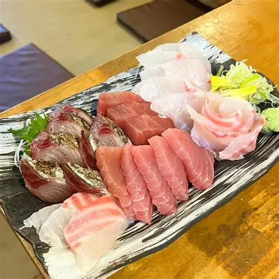
￥1,200～
厳選された海の幸をふんだんに 盛り合わせした豪華な一皿。特別な日にぴったりです。
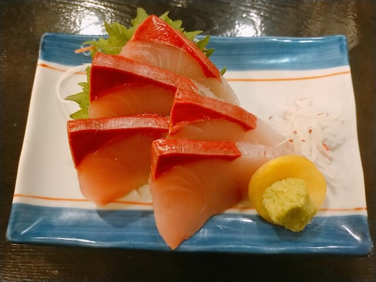
￥1,000～
しっとりとした身に上品な脂が広がるブリの刺身。 噛むほどに深まる甘みとコクを、ゆったりと味わえる一皿です。
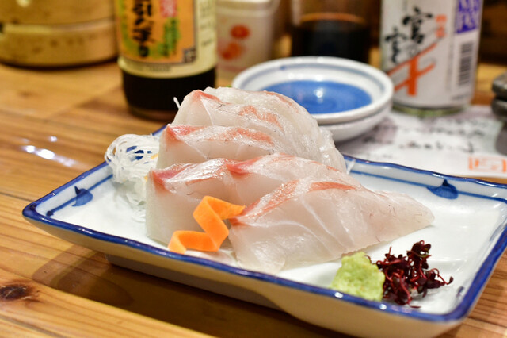
￥900～
淡い桜色の身に、やさしい甘みが広がる真鯛の刺身。 ほどよい弾力と清らかな旨みを、ゆったりとお楽しみください。
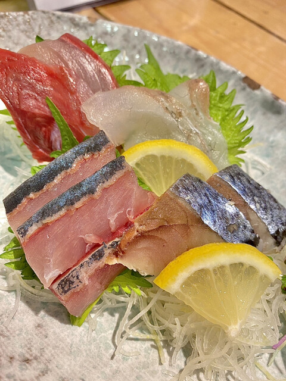
￥900～
南伊勢から届く朝獲れ鮮魚を、その日のいちばんおいしい状態で。 店主が目利きした“本日のおすすめ”を、ゆったりとお楽しみください。
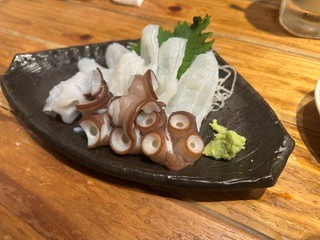
￥900～
しっとりと瑞々しい口当たりが心地よい、たこの刺身。 ほどよい弾力と澄んだ旨みを、ゆったりとお楽しみください。
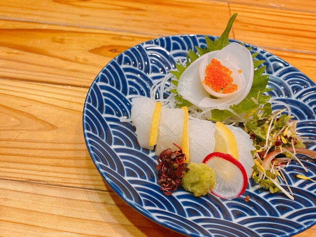
￥900～
南伊勢から届く朝獲れ鮮魚を、その日のいちばんおいしい状態で。 店主が目利きした“本日のおすすめ”を、ゆったりとお楽しみください。
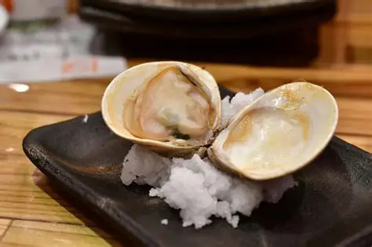
￥780
「その手は桑名の焼き蛤」と 言われる程地元桑名では有名な貝です。酒蒸しにも出来ます。
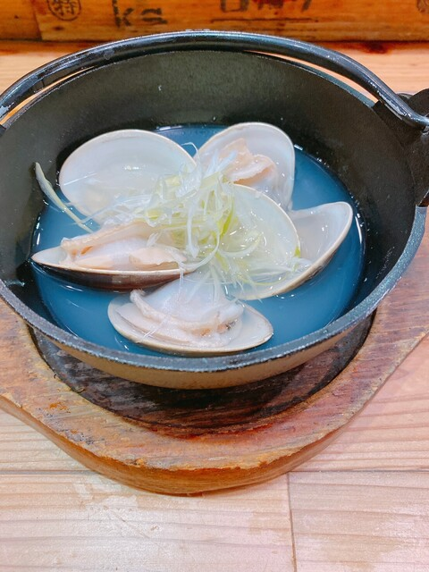
￥780
「その手は桑名の焼き蛤」と 言われる程地元桑名では有名な貝です。酒蒸しにも出来ます。
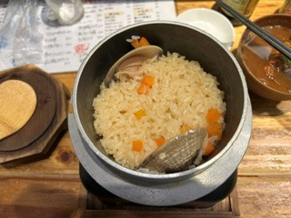
￥780
「その手は桑名の焼き蛤」と 言われる程地元桑名では有名な貝です。酒蒸しにも出来ます。
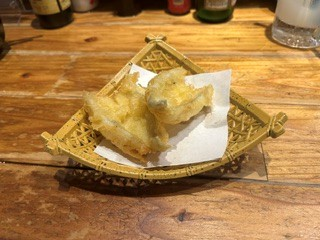
700円
ふんわりやわらかい若鶏を、丁寧に揚げた優しい味わいです。
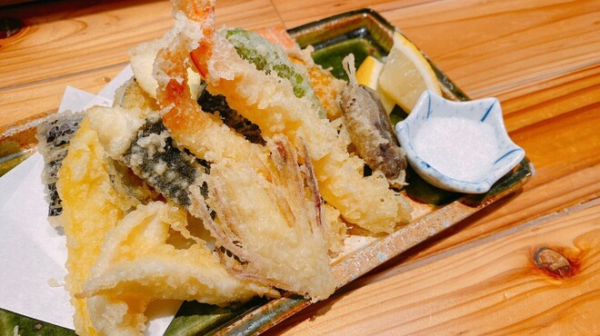
1,100円
海老や野菜などを取り入れた天ぷらの 盛り合わせ。衣の香ばしさと素材の旨味を堪能できます。
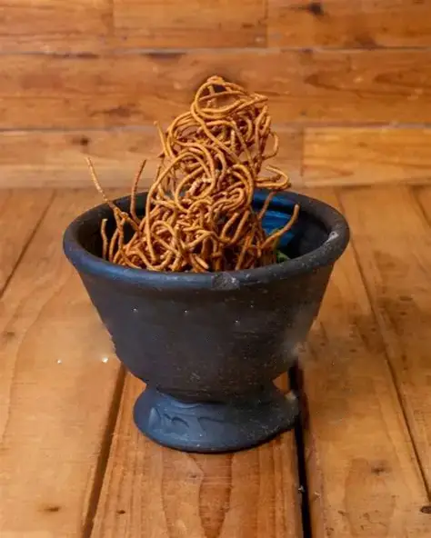
700円
てっぺんの名物サラダ。自家製のタルタル 上げた盛岡冷麺をサラダの上に載せた、食感が楽しい一品です。
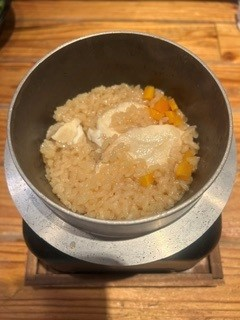
880円
ふんわりと焼き上げた甘めのたまご焼き。 優しいだし汁とともに広がるまろやかな味わいです。
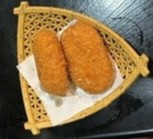
￥700円
ひと口かじれば、カニの香りがふわっと広がる。 とろけるクリームとサクサク衣のコントラストがたまらない 贅沢コロッケです。
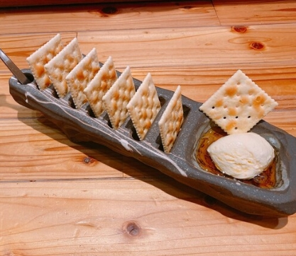
￥680円
白いクラッカーに、濃厚なクリームチーズと とろりとした蜂蜜を添えた上品な前菜。 甘みと塩気が重なり合う、ちょっと贅沢な一品です。
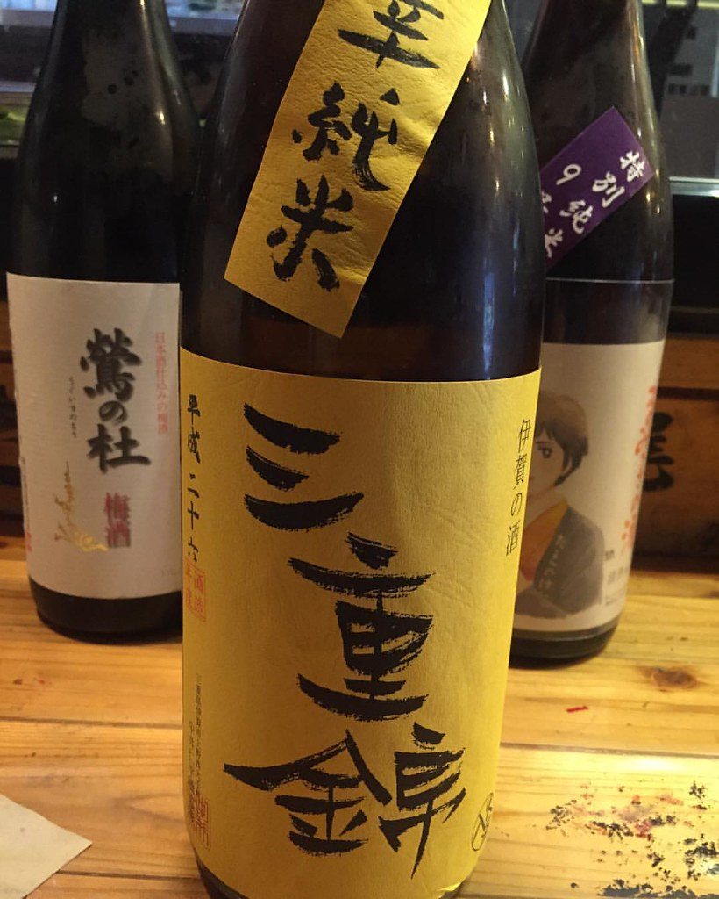
700円
麹と米の甘味を感じさせながらもサッパリとした後口のため尾を引かないキレの良さが抜群の酒です。
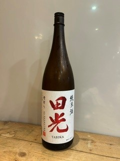
350円
時期により最善の酒米を使用し、旨味のある酸味と様々な温度帯で楽しめる食中酒です。
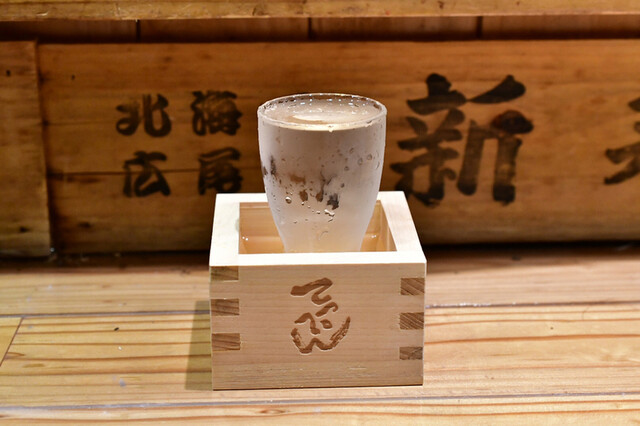
700円
時期により最善の酒米を使用し、
350円
時期により最善の酒米を使用し、旨味のある酸味と様々な温度帯で楽しめる食中酒です。
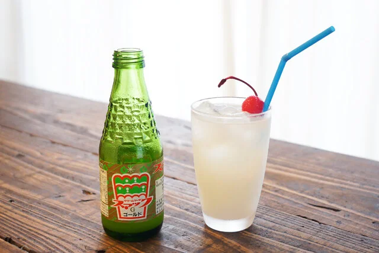
350円
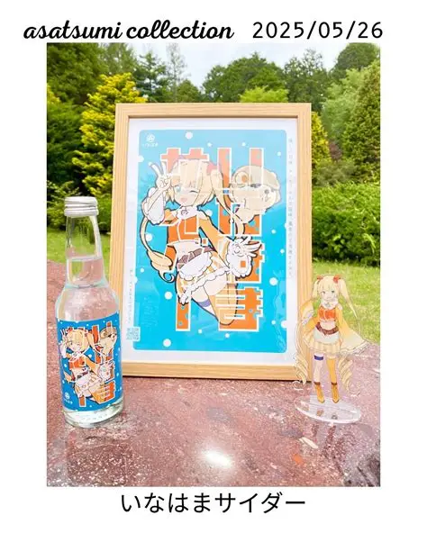
350円